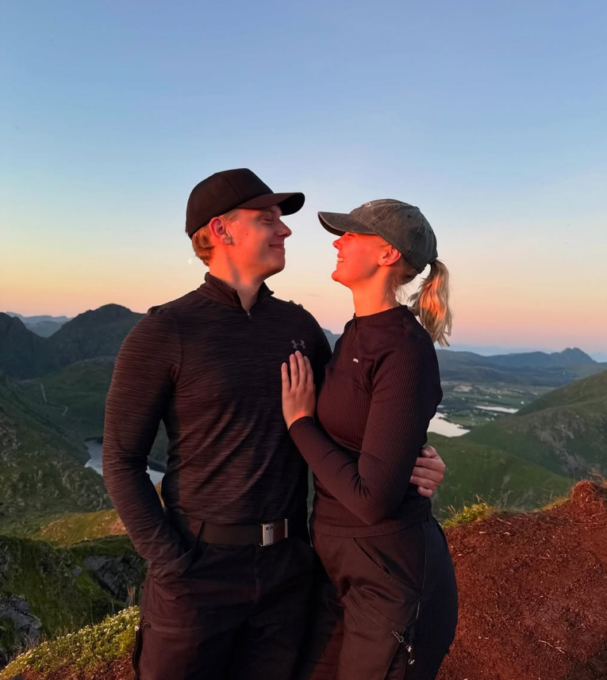
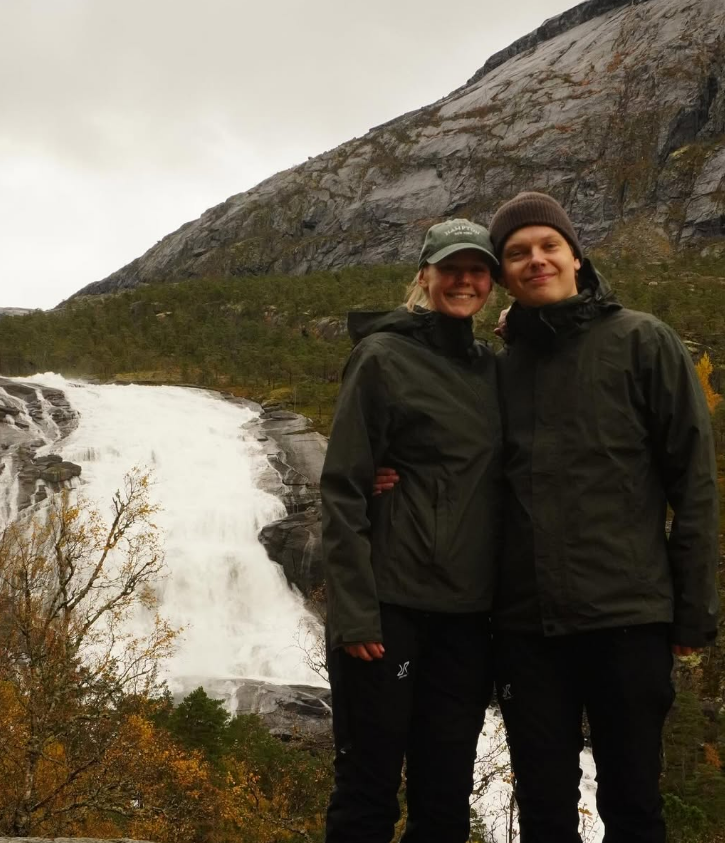

Mina Hobbyer
Denna sida är om mina hobbyer och intressen.


Hobbyer
Min mest alldagliga hobby är att gymma och sitta framför datorn eller kolla på filmer.
Skulle dock säga att min favorit hobby är att vandra och utforska naturen med min flickvän.
Vi har vandrat i Norge två gånger och fler kommer det att bli. Förra året vandrade vi i lofoten och under hösten vandrade vi i Bergen.
| Land | Plats | Antal Berg | Årstid | Sevärdhet |
|---|---|---|---|---|
| Schweiz | Schäflers Ridge | 1 | Sommar | Extremt dyra tåg |
| Norge | Lofoten | 3 | Sommar | Reinebringen |
| Norge | Bergen | 2 | Höst | Vöringfossen |
| Skottland | Edinburgh | 0 | Sommar | Edinburgh Castle |